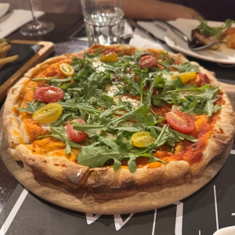
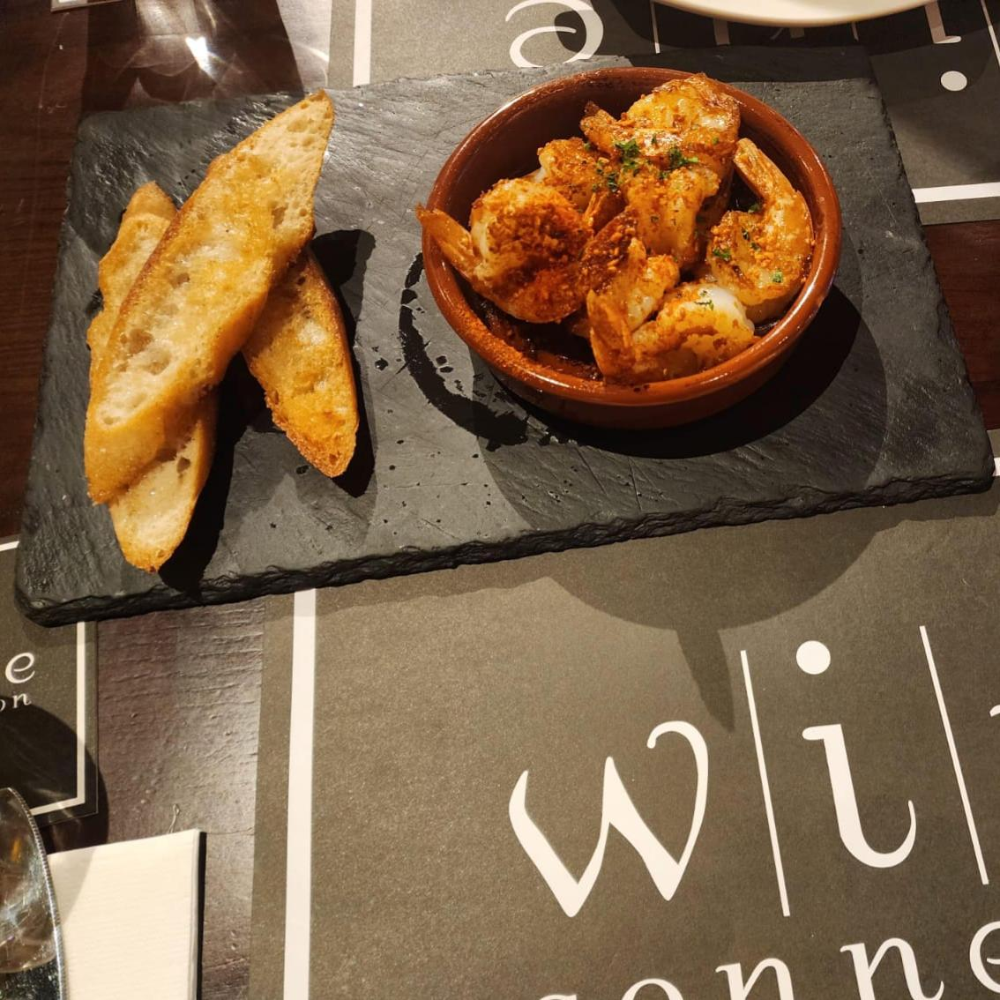
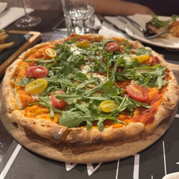
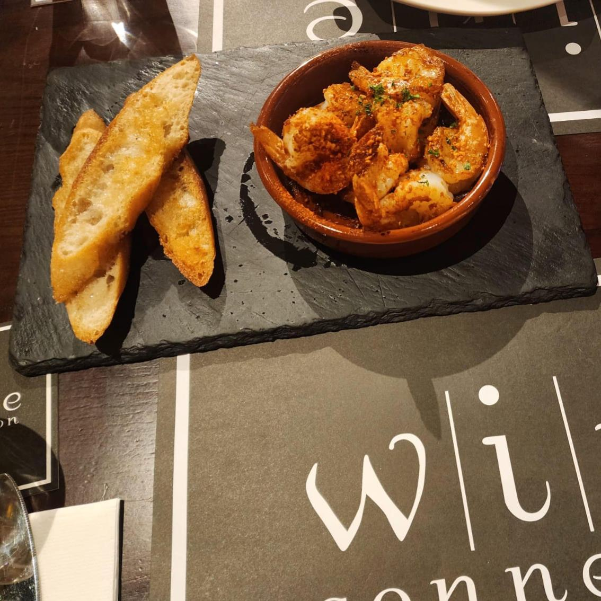

Nice thai pineapple fried rice, and there were about 3-4 small prawns. The rice was seasoned well and quite delicious.
Rating:
Had quick lunch at NCS hub canteen and tried their nasi goreng with loder. Not too bad, as the gravy went well with the rice, but was a bit disappointed that it was not coconut rice otherwise it would have gotten a higher score. The vegetables were quite fresh and the sambal was good.
Rating:
Decided to try one of the Yong tau fu places near my place. Had it with laksa gravy. Nice delicious laksa for dinner and ingredients were quite fresh.
Rating:

Read this in one of the reviews and knew I had to try it. The green curry was great and went well with the nicely fried prawn cutlet. The rice was covered with the layer of fried beaten egg yolks. Great find.
Rating:Tried out the birthday offer by DBS for 50% discount for 2nd paying customer. The afternoon high tea was inspired by British food, and had various items such as scotch eggs, beef sliders, mash potato etc. The combination was good and it came with free flow of coffee/tea and 1 pint of beer. Nice for Friday afternoon.
Rating:Can't go wrong with THW Char Siew Buns and iced HK Milk Tea for afternoon tea snacks.
Rating:
Had dinner for a period of time at KTPH food court. While the korean tofu soup and saba hotplate was not too bad, the notable mentions are the halal char kway teow and chicken cutlet.
Rating:
Had dimsum lunch. The only notable items were the pork ribs and bamboo beancurd skin. The rest were so-so.
Rating:Had dinner at Canton Paradise Plaza Sing. Ordered the usual dumplings in vinegar hot sauce, long beans, kang kong, sweet and sour pork and fried bee hoon. Dishes were good as usual standards.
Rating:
Bought NTUC potato chips, with plum sauce flavour and bak kwa flavour. Both sounded interesting but did not match up to expectations.
Rating:
Nicely fried fish and chips, and the fries were crunchy. The tartar sauce went well with the fish and chilli sauce. Good meal.
Rating:
Went for early breakfast at this cafe. Drinks were ok; Dry mee siam was ok, but the toast and fried kway teow was good.
Rating:
Had the Tempura Kohaku lunch set. Value for money and the tempura was good. The curry udon was ok, but it would be better if the sauce was more consistent in texture.
Rating:
Great trip with nice food, scenery with nice memories of the old and new. Relaxing trip to wind down after a year of hard work.

 



Hung out at Robertson Walk on Fri evening. Good red, good food, nice service.
Rating:
Tried McDonald's new truffle beef burger. I thought it was only so-so. Didn't have much truffle flavour and probably better off eating their normal cheeseburger or other burger classics.
Rating:
Lunch at AMK food centre and ate mee rebus by Yunos family. Top few mee rebus I had eaten so far; gravy was seasoned well and thick and went well with the yellow noodles with freshly cut green chili.
Rating:
Dinner at Tanjong Pagar. Not too bad in taste. Broth was clear and came with decent portions of chicken, vegetables, tofu and mushrooms. The udon was ok. Overall price was close to $28 with add-ons like raw tamago and iced oolong tea.
Rating:
Lunch at Tiong Bahru. Under-rated carrot cake which had some nice crunchy parts (I rated it as 3.7 star rather than public average 3.3 star). Vegetarian bee hoon portions were generous for whooping $5 inclusive of popiah.
Rating: